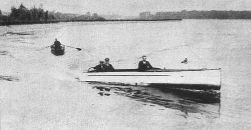
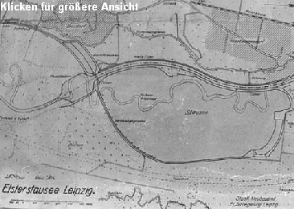
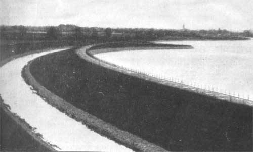

|
Der Elsterstausee
Von Regierungsbaumeister Natzschka
Auszug aus Sonderdruck Nr. 1 aus dem „Leipziger Beobachter“ (1936)
Eichblatt-Verlag (Max Zedler) Leipzig C1
Da, wo noch vor wenigen Jahren zwischen dem Hainholz bei Knauthain und dem Staatsforst "Bistum" bei Bösdorf sich die Elster mit stark abrissigen und verwilderten Ufern durch eine weite Wiesenaue schlängelte, liegt heute ein für die Leipziger Bevölkerung besonders reizvolles Ausflugsziel: der Elsterstausee.
Mancher Naturfreund war zunächst betrübt, daßein so schönes Stück der Elsteraue, durch das er oft hindurchgewandert war, untergehen sollte. Heute nach Fertigstellung des Stausees ist jedoch diese Besorgnis restlos der Freude über die der Landschaft gut eingefügte neue große Seefläche gewichen. Tausende und Zehntausende streben schon jetzt, obwohl der See für Badezwecke und sportliche Betätigung wegen der biologischen Einarbeitung zunächst noch nicht freigegeben werden konnte, an schönen Sommersonntagen dem Stausee zu. Es wird gewiss von vielen der Besucher dankbar begrüßt werden, im folgenden etwas über den Zweck und die Wirkung des Stausees zu erfahren.
Mit dem Bau des Elsterstausees und seiner Nebenanlagen sollten fünf Aufgaben gelöst werden:
1.) Regelung des gerade auf dieser Strecke völlig verwilderten Elsterlaufes und damit Verhinderung weiterer großer Uferabrisse und Verringerung der dadurch gegebenen Geschiebeführung. Die Regelung erstreckte sich auf 2,8 km. Der Flusslauf wurde um etwa 1 km verkürzt.
2.) Zurückhaltung des besonders bei Hochwasser von der Elster mitgeführten Geschiebes (Kies und Sand) und der absitzbaren Schwebestoffe (Schlamm) in einem oberhalb des Stausees in die Elster eingeschalteten Absitzbecken.
3.) Das Becken ist 4,5 ha groß (etwas größer als der Augustusplatz) und 5,5 m tief in das Gelände eingeschnitten. Durch dieses Absitzbecken soll das Elsterflutbecken in Leipzig, das laufend von Absitzmassen gereinigt werden muß, entlastet werden. Die in dem neu geschaffenen Absitzbecken zurückgehaltenen Geschiebe- und Schlammassen dienen zur Verfüllung zahlreicher alter Elsterschlingen und Auslehmungen, also zur Gewinnung neuen Kulturlandes. Die Herausbeförderung der Massen erfolgt mittels eines Saugspülbaggers, der die mit Wasser vermischten Kies- und Schlammassen ansaugt und sie in einer Rohrleitung unmittelbar bis an die Verfüllungstelle befördert.
4.)Biologische Reinigung des Elstermühlgrabenwassers im Stausee durch die natürliche Einwirkung von Licht und Luft.
5.) Während des größten Teiles des Jahres wird fast das gesamte Elsterwasser im Elstermühlgraben abgeführt. Infolge der Verschmutzung des Wassers durch Haus- und gewerbliche Abwässer ist dessen Selbstreinigungskraft derart geschwächt, daß die Elster die unterhalb von Leipzig eingeleiteten Abwässer kaum zu verarbeiten vermag. Im Stausee soll nun das Wasser durch natürliche Vorgänge seine Selbstreinigungskraft wiedergewinnen. Das Wasser nimmt auf seiner weiten Fläche Sauerstoff aus der Luft auf. Im Wasser entwickelt sich eine vielfältige Kleinlebewelt, die die im Wasser befindlichen gelösten und ungelösten Schmutzstoffe zum größten Teil abbaut. Spaltpilze, Kieselalgen, Geiseltierchen, Rädertierchen, Wasserflöhe, Würmer, Schnecken und Insektenlarven dienen sich je nach der Größenordnung als Nahrung, und die größeren dieser Tiere dienen wiederum zur Fütterung der in einer Anzahl von zunächst über hunderttausend Stück eingesetzten Karpfen, Schleien und Aale.
Der Stausee hat eine Länge von 1700 m und eine Breite bis zu 700 m. Die Größe entspricht mit nahezu 100 ha = 1 qkm etwa der doppelten Größe des inneren Stadtkernes von Leipzig. Die Wassertiefe nimmt von Süd nach Nord von 1,5 m auf 3,5 m zu.
Die Elster selbst - darauf sei noch einmal besonders hingewiesen - steht mit dem Stausee in keinerlei Verbindung. Es ist zwischen zwei getrennten Wasserläufen zu unterscheiden, einmal dem der Elster, durch das Absitzbecken hindurch am Stausee entlangfließend, und zum anderen dem Lauf des Mühlgrabens, der durch das Vorklärbecken, den oberen Dücker und den Stausee fließt und durch den unteren Düker wieder dem alten Elstermühlgraben zugeleitet wird.
In dem dem Stausee vorgeschalteten Vorklärbecken, das durch einen Fangedamm in zwei Becken aufgeteilt ist, um die einzelnen Becken im Bedarfsfalle einmal reinigen zu können, werden bereits etwa 90 % der absitzbaren Schwebestoffe abgesetzt. Das so vorgeklärte Wasser wird dann durch einen Eisenbetondüker unter der Elster hinweggeführt und gelangt zunächst in einen 750 m langen Verteilungsgraben, aus dem das Wasser durch 50 kleine Schützöffnungen gleichmäßig in den Stausee eintritt. Hierdurch wird erreicht, daß das Wasser den Stausee nicht in einer einzigen, gleich bleibenden Strömung durchfließt, sondern nahezu die gesamte Fläche des See bestreicht.
Der Stausee ist nicht wie das Absitzbecken in das Gelände eingeschnitten, sondern auf das anstehende Wiesengelände aufgesetzt worden. Die im Mittel 2,5 m hohen Einfassungsdämme wurden aus dem beim Aushub des Absitzbeckens und der Flußregelung gewonnenen Massen (rund 500.000 cbm) geschüttet. Die Dichtung der Dämme erfolgte mittels einer hinreichend starken und sorgsam eingewalzten Lehmschürze, die gegen den Wellenschlag durch eine 12 cm starke Betonplatte geschützt ist. Die gesamte Sohle des Stausees ist mit einem besonders entwickelten Verfahren unter Verwendung von Spezialgeräten sorgsam abgedichtet worden. Insbesondere wurde der rund 2,2 km lange frühere Elsterlauf mit Lehmmassen verfüllt und eingewalzt.
Bereits bei der Planbearbeitung wurde besonderer Wert auf die Einfügung des Stausees in das vorhandene Landschaftsbild gelegt. Harte Linien und strenge Formen wurden deshalb vermieden. In den Stausee einspringende Halbinseln geben der Anlage ein bewegtes Bild. Erhebliche Neuanpflanzungen werden den See in wenigen Jahren ringsum mit einem geschlossenen Grüngürtel umgeben und den bereits vorhandenen Charakter eines Waldsees noch verstärken. Um den Stausee diesen besonderen Reiz für immer zu erhalten und eine regellose Bebauung auszuschließen, wurde in Zusammenarbeit mit der Landesplanung und anderen hierfür zuständigen Stellen schon jetzt ein Flächenaufteilungsplan für das gesamte Gelände rings um den See aufgestellt.
Dem Wärterhaus am Südende des Sees wurde durch die Errichtung eines Turmes eine besondere architektonische Note gegeben. Bei der Entwurfsbearbeitung ist weiterhin auf die verschiedensten Auswertungsmöglichkeiten, die ein derartig großer See in unmittelbarer Nähe der Großstadt bietet, bereits von Anfang an Rücksicht genommen worden. So wurde z.B. die Dammschüttung am Nordrande des Sees durch eine zweckmäßige Verteilung der unterzubringenden Bodenmassen so angelegt, dass hier später einmal ein großes Strandbad mit einem 20.000 qm großen Liegestrand eingerichtet werden kann.
Auf den verschiedenen oben erwähnten Halbinseln könnten, sofern sich hierfür ein Bedürfnis ergibt, entsprechende Wirtschaftsstätten errichtet werden. Voraussichtlich wird der Stausee später auch für den Ruder- und Segelsport freigegeben und sich dadurch seine starke Anziehungskraft noch erhöhen. Der Bau des Elsterstausees war die erste große Arbeitsbeschaffungsmaßnahme der nationalsozialistischen Regierung im Leipziger Bezirk. Mit dem Bau wurde im Juli 1933 begonnen. Bereits etwa nach Jahresfrist waren die hauptsächlichsten Bauarbeiten zu Ende geführt. Insgesamt waren rund 140.000 Tagewerke geleistet worden. Die neun Großfirmen und die vielen mittleren und kleineren am Bau beschäftigten Unternehmer hatten zeitweise bis zu 900 Mann eingesetzt.
Träger des Unternehmens war die Stadt Leipzig. Die Planung und Bauoberleitung lag bei der Sächsischen Wasserbaudirektion in Dresden, die Baudurchführung beim Staatlichen Neubauamt Elsterregelung Leipzig.
|
{kind=link}